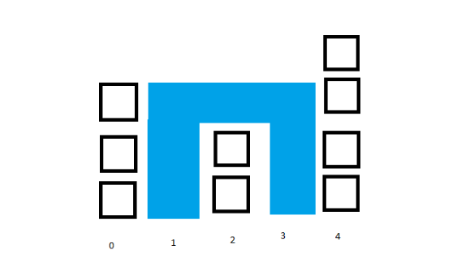

Bài 2: Tạo ra một trang gồm có:
- 1 ô input.
- 1 container có chứa thẻ SVG hoặc Canvas.
Yêu cầu:
- Đầu vào của ô input sẽ là 1 dãy số tự nhiên [0, ∞) và được ngăn cách nhau bởi dấu “,”
- Từ dữ liệu ở ô input sử dụng javascript vẽ ra các hình khối có dạng sau bằng canvas:
VD: với input là 3,0,2,0,4 ta có được kết quả:

Trong đó:
- Vị trí của cột sẽ là index của số trong mảng
- Giá trị của số trong mảng sẽ là độ cao của các cột block.
- Giả sử các cột block trên sẽ tạo 1 bức tường và coi 1 block = 1 m³, tính lượng nước tối đa có thể chứa được (tương ứng với phần màu xanh).
Kết quả bằng 7 với ví dụ ở trên